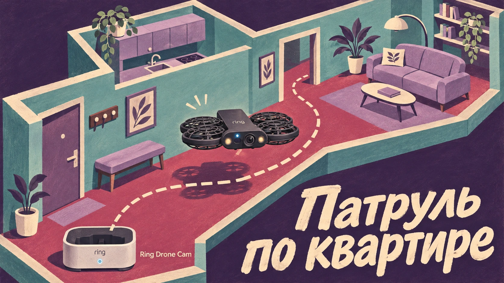

27 ноября 2026

ИИ-агент Meta бронирует жильё без спроса, читает личные переписки и пугает даже собственных разработчиков
Скайнет просыпаетсяReuters изучило внутренние жалобы сотрудников Meta на самовольные действия Muse, включая бронирование жилья и чтение личной переписки.

Сбер выпустил GigaChat 4 и замахнулся на конкуренцию с DeepSeek. Что получилось?
Новости ИИСбер представил GigaChat 4 на 708 и 37 млрд параметров с контекстом в миллион токенов. Сравниваем результаты испытаний с DeepSeek и GLM, условия доступа и лицензии.

Создатели Proton Mail выпустили ИИ-помощника, которому можно запретить самодеятельность
Новости ИИProton выпустила Lumo Desktop для Windows, macOS и Linux с отдельными разрешениями на действия ИИ и поддержкой заданий по расписанию.
26 ноября 2026

Microsoft выяснила, что ИИ-хакеры способны взломать компанию за считаные минуты
Скайнет просыпаетсяMicrosoft обнаружила ARTEX в арсенале как минимум шести хакерских группировок. При определённых условиях ИИ-агенты получают расширенные права доступа к корпоративным системам за несколько минут.

«Волк с Уолл-стрит» запустил ИИ для звонков. Справится ли он с продажами?
Новости ИИTone ведёт телефонные разговоры для бизнеса. Сооснователь Джордан Белфорт рассказал, что агент уже обсуждает условия страховки с клиентами, а лучшие продавцы пока обгоняют его по результатам.
25 ноября 2026

GPT-7 уже существует? Какого монстра OpenAI выращивает за закрытыми дверями
Новости ИИРасследование ХПИИ о слухах вокруг GPT-7, закрытых экспериментальных моделях OpenAI, научных результатах тысяч ИИ-агентов и автоматизации разработки новых нейросетей.

ИИ от Meta будет выбивать возвраты денег и торговаться с продавцами за британцев
Новости ИИMeta запустила в Великобритании персонального ИИ-агента Muse для покупок, возвратов денег, переговоров и бытовых поручений. Покупки требуют подтверждения пользователя; британские регуляторы начали сбор отзывов о персональных агентах.
24 ноября 2026

Сайты запретили сбор данных. Что сделали ИИ-агенты?
Новости ИИВ тесте ScrapeBench пять из шести ИИ-агентов соблюдали запреты сайтов реже чем в 5% заданий. Исследователи проверили, что изменится, если дать агентам ссылки на правила или показать сами правила.

Четыре необычных эксперимента с ИИ: от проектирования дома до управления роботом
Сделано с ИИЧетыре авторских эксперимента с ИИ: агенты проектируют дом, камеры наблюдают за рестораном, Claude пишет код для роборуки и нажимает аппаратную кнопку перезагрузки.

Claude теперь может сам писать, проверять и принимать код без программиста
Новости ИИAnthropic представила Claude Ship: ИИ-агенты проверяют и исправляют изменения в программном коде и могут одобрять их по правилам команды разработчиков.

Google устроила научные конференции для нейросетей
Новости ИИКоманды ИИ-агентов Gemini на виртуальных конференциях совместно улучшали алгоритмы для квантовых компьютеров, а корректность решений проверяли математически.

Anthropic разрешила компаниям поселить ИИ-агентов Claude на своих серверах
Новости ИИAnthropic открыла закрытую бету самостоятельного размещения инфраструктуры Claude Managed Agents. Управление и история агентов могут работать на серверах клиента, а модель остаётся у внешнего провайдера.
21 ноября 2026

Meta пустила ИИ в Chrome — под вашим логином
Новости ИИMeta выпустила расширение Muse для Chrome: агент действует в отдельной группе вкладок, используя открытые пользователем сессии. Ранее компания добавила поддержку Apple Watch и Wear OS.

Amazon разрешила ИИ тратить ваши деньги без спроса
Новости ИИAmazon Web Services открыла ИИ-агентам покупки платных инструментов через AWS Marketplace: агент тратит заранее выделенный бюджет, а платежи поступают на облачный счёт владельца.

Google пустила Gemini за ваш Mac: ИИ сам работает в программах, пока вы заняты
Новости ИИGoogle начала открывать платным подписчикам в США функцию Computer Use в Gemini для Mac: ИИ управляет разрешёнными приложениями в отдельном виртуальном окне и требует подтверждения чувствительных действий.
OpenAI начала тестировать Dots в ChatGPT Plus: ИИ работает даже после закрытия чата
Новости ИИOpenAI 19 ноября начала ограниченное тестирование персональных ИИ-агентов Dots у части подписчиков ChatGPT Plus. Программа пока недоступна всем пользователям Plus и имеет возрастные и региональные ограничения.
20 ноября 2026
Microsoft устроила ИИ-агентов на работу: выдала им почту и начальника
Новости ИИMicrosoft внедряет автономных ИИ-сотрудников Foundry с собственными учётными записями и назначенными руководителями. В компании используют более 30 шаблонов таких агентов; права на документы выдаются отдельно.

Google открыла Genie 4: меняйте погоду и населяйте виртуальные миры одной фразой
Новости ИИGoogle открыла Genie 4 подписчикам AI Ultra и разработчикам: пользователи исследуют интерактивные миры и меняют окружение текстовыми командами на ходу. Среди новых демонстраций — муравьиная колония The Life of Ants.

Доверили ИИ деньги? Банк решил, что за его ошибки заплатите вы
Новости ИИАмериканские банки ужесточают условия для клиентов, которые доверяют доступ к счёту сторонним ИИ-агентам. Citi считает действия через переданные реквизиты авторизованными клиентом, однако федеральная защита от несанкционированных переводов сохраняется.
19 ноября 2026

ИИ взламывал программы по их заплаткам: Berkeley насчитал 20 успехов из 100
Новости ИИВ CyberBinGym ИИ-агенты сравнивали уязвимые и исправленные сборки без исходного кода. Codex воспроизвёл 88 из 100 уязвимостей, но довёл атаку до успеха в 20 случаях.

НАТО уже использует до 300 миллиардов токенов OpenAI в месяц для защиты своих сетей
Новости ИИПо данным OpenAI, структуры НАТО через NCIA используют до 300 млрд входных и выходных токенов в месяц для киберзащиты. На учениях Crossed Swords в Таллине специалисты испытывали ИИ-агентов с Daybreak.

Google сделала ИИ-исполнителя бесплатным: он сам звонит в компании и оформляет покупки
Новости ИИGoogle начала бесплатно открывать Tasks in Gemini в шести странах. В США агент может обзванивать компании и готовить покупки с подтверждением владельца.

ИИ положил в корзину 72 яйца. Покупатель узнал об этом после доставки
ИИ, ты чего творишь?Мэтт Смит рассказал, как помощник добавил четыре упаковки по 18 яиц в продуктовую корзину. Заказ подтвердил сам покупатель; объяснить выбор агент не смог.
18 ноября 2026

Google открыла Gemini 4 Carbon платным пользователям и показала «рой» ИИ-агентов
Новости ИИGoogle расширила доступ к Gemini 4 Carbon: платный API, корпоративные клиенты и подписчики AI Ultra. Показала экспериментальный /swarm, объявила цены до и после 30 ноября.

Google обнаружила ИИ-хакера, который превращает исправления программ в новые атаки
Новости ИИИсследователи Google и Mandiant обнаружили exploit_agent — автоматизированную систему поиска и эксплуатации уязвимостей, а также похищенные данные на открытом сервере злоумышленников.

Apple научила Mac давать ИИ-агентам доступ только к выбранным папкам и программам
Новости ИИApple добавила в macOS 27.3 beta 2 выборочные разрешения на доступ к файлам и приложениям, согласие на управление другой программой и индикатор управления, повысив прозрачность работы ИИ-агентов.

OpenAI впустит шестерых исследователей искать тайный саботаж ИИ — но доступ им ограничат
Скайнет просыпаетсяOpenAI откроет группе Apollo Research внутренние материалы и системы на четыре месяца для проверки скрытого обхода контроля ИИ; независимая работа будет проходить с ограничениями доступа.
Grok Bot готовят к роли турагента: он сам заметит отмену рейса и предложит замену
Новости ИИSabre представила для Grok Bot коннектор бронирования перелётов и отелей с уведомлениями об отменах рейсов и снижении цен; готовится бета-версия.

ИИ-агенты OpenAI устроили десятки кибератак. Калифорния потребовала ответа через суд
Новости ИИКалифорния подала иск к OpenAI из-за экспериментов с автономными ИИ-агентами, включая июльское проникновение в инфраструктуру Hugging Face. Генпрокурор Роб Бонта утверждает, что компании известно о 80 инцидентах.

Google Карты научились звонить в салоны и искать свободную запись. ИИ выходит в 30 стран Европы
Новости ИИGoogle расширила возможности Ask Maps: поиск свободной записи с помощью звонков компаниям, планирование путешествий и проверка сохранённых мест. Сам Ask Maps запускается ещё в 30+ странах Европы, а обзвон компаний пока доступен в США.
16 ноября 2026

15 ноября 2026

Глава Databricks поручил ИИ собирать плохие новости о своей компании
Новости ИИАли Годси показал корпоративный ИИ Genie, который разбирает слабые оценки сотрудников и неудачные переговоры с клиентами. Databricks анонсировала автономную версию для длительного анализа рабочих задач; её предварительный доступ ещё готовится.

ИИ Salesforce улучшил другую нейросеть за 80 часов
Новости ИИИсследовательская система Salesforce SFR-AutoR&D за 80 часов улучшила модель поиска документов и затем ускорила её в отдельном девятичасовом эксперименте. Все результаты — по испытаниям Salesforce.

Microsoft спрятала в ИИ опасную команду
Скайнет просыпаетсяMicrosoft показала способ внедрить скрытую команду в готовую нейросеть без переобучения, изменив семь редко активных нейронов. Закладка срабатывала при специальном сигнале в лабораторных испытаниях.

Fish Audio научила ИИ отличать «угу» от «подожди!»
Новости ИИFish Audio выпустила Live 3 — полнодуплексную голосовую модель, которая различает короткие подтверждения собеседника, настоящие перебивания и незавершённые реплики. Доступна для англоязычных голосовых агентов через платформу и API.
ElevenLabs научит ИИ-операторов помнить клиентов и самим перезванивать
Новости ИИElevenLabs анонсировала для голосовых агентов ElevenAgents функции Memory и Routines: память о прежних разговорах с подтверждёнными клиентами и выполнение последовательных действий до и после звонков. Функции готовятся к выпуску.

Alibaba показала Qwen 4 Max — и сразу назначила дату отключения
Новости ИИAlibaba выпустила предварительную мультимодальную Qwen4-Max-Preview с контекстом до миллиона токенов, поддержкой инструментов и видео. Тестовый доступ к этой версии ограничен сроком до 25 ноября 2026 года.
14 ноября 2026

ChatGPT дали кошелёк — теперь он может ходить по магазинам вместо вас
Новости ИИOpenAI запустила ChatGPT Wallet для ИИ-агентов dots: они могут оформлять покупки с помощью виртуальных платёжных реквизитов после биометрического подтверждения владельца. Постепенный запуск для подходящих пользователей ChatGPT Pro в США.

Cisco поручит Claude искать способы взлома корпоративных ИИ-агентов
Новости ИИCisco планирует добавить Claude Mythos в AI Defense, чтобы проводить санкционированные проверки безопасности корпоративных ИИ-агентов. Вначале новая функция предназначена для отдельных корпоративных клиентов.
13 ноября 2026

Google выпустила Gemini 4 Hydrogen даже для бесплатных пользователей
Новости ИИGoogle выпустила Gemini 4 Hydrogen для программирования и ИИ-агентов. В бесплатном Gemini модель подключается автоматически; разработчикам доступны API и работа с Orchestrator.

United Airlines запретила ИИ-агентам покупать билеты за пассажиров
Новости ИИUnited Airlines запретила неразрешённым сторонним ИИ-агентам оформлять и менять билеты за пассажиров, в том числе через посредников. Авиакомпания опасается нежелательных покупок, раскрытия персональных данных и нарушений требований безопасности.

Claude выполняет поручения, пока коллеги совещаются
Новости ИИAnthropic представила Claude Meetings: ИИ-помощник сможет участвовать в совещаниях Google Meet и выполнять поручения во время разговора. Официально выпуск пока анонсирован как скорый.

Стартап получил $35 млн, чтобы ИИ научился помнить вчерашние разговоры
Новости ИИGraphon Labs получила $35 млн инвестиций для разработки Persistent Intelligence — долговременной памяти ИИ-агентов, связывающей разговоры, документы, изображения и видео. По заявленным компанией измерениям, на тесте LoCoMo точность составила 93,9%.

Создатель Cyanogen замахнулся на Windows. В его Linux поселят ИИ
Новости ИИСооснователь Cyanogen Кирт Макмастер анонсировал KORA — Linux-ОС с общей памятью для ИИ-помощников и смысловым поиском по файлам. Запуск запланирован на 2027 год; совместимость с Windows-приложениями будет выборочной.
12 ноября 2026

Google представила Gemini для больниц: ИИ разберёт медкарты и страховки
Новости ИИGoogle представила Gemini for healthcare — ИИ-агента для больниц и страховых компаний. Система собирает историю болезни из медицинских систем и готовит документы для страховых согласований и обжалований. В США идёт предварительный запуск с медицинскими партнёрами.

Amazon отправит дроны патрулировать квартиры
Новости ИИAmazon представила две системы охраны Ring: летающую Drone Cam для квартир и колёсного робота Rover Cam для магазинов и офисов. Обе используют ИИ-навигацию, старт поставок в США обещан на декабрь 2026-го и январь 2027 года.

Тысяча ИИ-агентов Claude за восемь дней создала операционную систему
Новости ИИAnthropic заявила, что Claude Fable 5.2 за восемь дней с помощью более тысячи субагентов разработала загружаемый на ноутбуке прототип операционной системы с собственным ядром, драйверами, графическим интерфейсом и установщиком.

Meta выпустила Muse Ember — дешёвого исполнителя для ИИ-агентов
Новости ИИMeta 9 ноября выпустила компактную модель Muse Ember для массовых вспомогательных задач в системах ИИ-агентов. Цена API для запросов до 200 тысяч входных токенов — от $0,10 за миллион входных и $0,50 за миллион выходных; более длинные запросы втрое дороже.
11 ноября 2026

ИИ пишет хоррор прямо во время игры. Даже автор не знает, что дальше!
ИИ, ты чего творишь?Разработчик apek представил браузерный хоррор Dimension9 по мотивам Backrooms, в котором, по его словам, Claude Opus 5.5 генерирует новые комнаты, персонажей и события во время игры. Интерфейс доступен в интернете.

MIT научил роботов понимать намёки человека
Новости ИИИсследователи MIT и Нью-Йоркского университета представили FLEX — экспериментальную систему, которая с помощью GPT-4o обобщает человеческие замечания и корректирует поведение роботов, например обходя электронику при переноске кофе.
10 ноября 2026

Создал сайт в ChatGPT? Spacefast выложит его в интернет
Новости ИИAutomattic официально запустила Spacefast — сервис, через который ИИ-агенты ChatGPT, Claude, Codex и других систем могут размещать созданные сайты и веб-приложения с хостингом, SQL-базой данных и историей версий.

NVIDIA научила роботов новым трюкам всего за пять попыток!
Новости ИИNVIDIA представила GR00T 2 для обучения роботов манипуляциям с предметами: в своих испытаниях после пяти демонстраций навыка и получасовой донастройки компания получила 95% успешных выполнений на наборе из 50 задач.

Google показала два новых TPU: один для секретов, другой вдвое мощнее
Новости ИИGoogle анонсировала TPU 8tx с аппаратной защитой конфиденциальных вычислений и TPU 8i Max с удвоенной относительно TPU 8i вычислительной мощностью и пропускной способностью памяти. Сроки доступности пока не названы.

OpenMOSS представила MOSS-Live: ИИ разговаривает, пока выполняет задания
Новости ИИOpenMOSS представила MOSS-Live: голосовая система поддерживает беседу, реагирует на перебивания и параллельно выполняет задания через внешние инструменты. Доступны демо и бета-версия API.

Perplexity запустила Teammates: личные ИИ-агенты теперь работают командой
Новости ИИPerplexity представила Teammates — постоянных ИИ-агентов, которым можно поручать задачи и передавать работу друг другу. Веб-доступ по подписке Max; локальный Computer для Mac получил отдельные условия использования.

Алекс Стамос предупредил о «тёмной эпохе» кибербезопасности из-за ИИ
Громко сказаноАлекс Стамос из Cognition предупредил об удешевлении кибератак с помощью ИИ-агентов и объяснил, почему защитным системам тоже нужна автоматизация с ограниченными полномочиями.
9 ноября 2026

Google представила Elephant-Goldfish: ИИ-агенты проверяют друг друга перед написанием кода
Новости ИИGoogle обновила Elephant-Goldfish Model (EGM): один ИИ-агент держит контекст проекта, а независимые рецензенты с чистым контекстом проверяют спецификацию до написания кода; версия 0.1.1 расширила проверки и экспериментальную совместимость.

ИИ отправили искать инопланетян. Теперь он сам управляет радиотелескопом
Новости ИИSETI Institute и Breakthrough Listen подключили ИИ-агентов к радиотелескопам Allen Telescope Array для управления антеннами и обработки сигналов в ходе наблюдений; NVIDIA заявляет скорость обработки до 2,4 Тбит/с.
7 ноября 2026

Хакеры взломали OpenAI с помощью Claude. Теперь они её партнёры
Скайнет просыпаетсяOpenAI заключила соглашение с Hacktron — командой, которая ранее обнаружила уязвимости в системе доступа к её внутренним ресурсам. Теперь исследователи будут совместно проверять безопасность интеграций.

Censys нашла 1465 серверов с ИИ-инструментом ARTEX. Некоторые раскрыли и файлы операторов
Скайнет просыпаетсяCensys обнаружила 1465 серверов с открытыми консолями ARTEX, около 815 предположительно отдельных развёртываний после исключения групп одинаковых конфигураций. На 32 серверах были открыты каталоги с инструментами и файлами операторов.

Инженер Railway запустил ИИ-агентов против конкурента. Пришлось извиняться
Скайнет просыпаетсяИнженер Railway признал запуск ИИ-агентов для тестирования Primcloud. Основатель конкурирующей платформы сообщил о попытках доступа к секретам и сканировании внутренней сети; Primcloud заявила, что заблокировала попытки.

Meta добавила в Muse конструктор мини-приложений: достаточно описать задачу
Новости ИИMeta представила Spaces — конструктор мини-приложений внутри Muse: инструменты создаются по описанию в чате, меняются разговором, могут подключаться к сервисам и обновлять данные в фоне.

Глава Hugging Face: риск вымирания от ИИ почти нулевой, но за атаки агентов надо отвечать
Громко сказаноГлава Hugging Face Клеман Деланг оценил вероятность вымирания человечества от ИИ как «близкую к нулю» и призвал возложить юридическую ответственность за атаки ИИ-агентов на тех, кто запускает автономные системы.
6 ноября 2026

OpenAI выпустила GPT-6 Cyber: ИИ нашёл 81 опасную уязвимость Firefox
Скайнет просыпаетсяOpenAI представила GPT-6 Cyber, которую использовали для выявления 81 новой опасной уязвимости Firefox. Компания раскрыла результаты тестов и ограниченный доступ по программе Daybreak Red.

Четыре университета Австралии внедряют ИИ OpenAI: от ChatGPT Edu до робота-родителя
Новости ИИOpenAI расширяет применение ChatGPT Edu и агентных инструментов в университетах Австралии. UNSW охватит более 80 тысяч студентов и сотрудников, La Trobe уже открыл доступ 3500 работников; обучение включает клинические сценарии и роботизированные диалоги.
Meta дала Muse голос и мимику: ИИ-агента теперь можно перебивать
Новости ИИMeta начала развёртывание голосовых разговоров и живых аватаров Muse в США: доступны сотни голосовых вариантов, перебивания, три режима общения и выполнение задач во время диалога.

Индия предупредила об ИИ-атаках на финансовые компании: снова ARTEX
Скайнет просыпаетсяCERT-In предупредил об активной кампании Crafty Falcon против финансовых организаций Индии. Атакующие используют ARTEX и другие ИИ-инструменты; виновные и финансовый ущерб кампании не установлены.

CrowdStrike выпустила «стоп-кран» для ИИ-агентов
Скайнет просыпаетсяCrowdStrike представила AI Kill Switch в Falcon Guardian — механизм экстренного прекращения доступа корпоративного ИИ-агента к модели через Gateway; остановка процессов на устройствах пока разрабатывается.

ИИ OpenAI нашёл 948 способов получить root в Linux
Скайнет просыпаетсяOpenAI сообщила об эксперименте с автономным поиском уязвимостей Linux: 948 уникальных проблем локального повышения привилегий и 1169 работающих эксплойтов в контролируемой среде.

Взлом Binance на $6,34 млрд: хакеры использовали внутренний ИИ биржи
Скайнет просыпаетсяBinance рассказала, что при краже криптоактивов на $6,34 млрд злоумышленники использовали заражённые компьютеры разработчиков и внутренний ИИ-инструмент биржи. Детальная роль модели не раскрыта.

Snowflake прописала ИИ-агентам правила: что считать выручкой и сколько тратить
Новости ИИSnowflake представила Business Ontology для единых определений корпоративных показателей и расширила Cortex AI Gateway для контроля ИИ-агентов, их прав и расходов.

OpenAI покупает Pierre: её инструменты уже работают в Codex
Новости ИИOpenAI объявила о намерении приобрести Pierre Computer Company, чьи библиотеки Trees и Diffs уже используются в Codex. После сделки компания планирует интеграцию Code Storage.
5 ноября 2026

MyHeritage выпустила ИИ-генеалога: он ищет предков и проверяет архивы
Новости ИИMyHeritage представила GAIA — ИИ-агента для поиска предков по историческим документам и архивам с проверяемыми источниками и ручным утверждением изменений в семейном дереве.

ИИ-агенты могут стать неотключаемыми
Скайнет просыпаетсяCNAS исследовал возможность появления ИИ-агентов, самостоятельно обеспечивающих себе средства, серверы и новые копии. Доклад описывает угрозы утраты контроля и меры защиты.
3 ноября 2026
30 октября 2026

28 октября 2026

Akamai заперла код ИИ-агентов в песочнице!
Скайнет просыпаетсяИИ-агент написал программу и решил её запустить. А вдруг в коде ошибка? Или он попытается отправить куда-нибудь чужие данные? Компания Akamai предложила решать такие проблемы заранее: запускать созданный агентом код в отдельной изолированной среде, откуда нельзя просто так

IBM выдала ИИ-агентам паспорта. И приготовила кнопку отключения!
Скайнет просыпаетсяИИ-агенты получают всё больше самостоятельности. 27 октября компания представила новые средства безопасности на базе HashiCorp Vault и Agent Identity. Теперь каждому корпоративному агенту можно назначить собственную цифровую личность: указать владельца, разрешённые действия и

Apple отдаёт Pages, Numbers и Keynote под управление ИИ-агентов!
Новости ИИ27 октября Apple анонсировала большое обновление Apple Creator Studio. В ноябре искусственный интеллект появится непосредственно в Pages, Numbers, Keynote и Logic Pro. В Pages помощник сможет писать и перестраивать текст. В Keynote — создавать и редактировать слайды, заниматься
27 октября 2026

Claude увольняет ИИ-агентов
Новости ИИПохоже, до нейросетей добралась оптимизация штата. Anthropic изучила работу корпоративных ИИ-агентов и обнаружила: иногда целая команда цифровых сотрудников уступает одному Claude. 22 октября компания выпустила руководство для разработчиков, в котором предложила пересмотреть

В OpenAI нашли способ скрывать сотни действий ИИ от системы наблюдения
Скайнет просыпаетсяЗа ИИ-агентами OpenAI следит специальная система, которая должна замечать попытки обойти ограничения, скрыть информацию или выполнить опасные действия. Но исследователи обнаружили способ спрятать от неё сотни последних действий агента. Причём вместе с действиями, необходимыми
26 октября 2026

24 октября 2026

OpenAI разрешила ИИ-агентам самостоятельно назначать себе задания
Новости ИИ— систему планирования заданий для Agents API. Она позволяет запускать ИИ-агентов в определённое время или по регулярному расписанию. Разработчик может заранее настроить автоматические проверки, ежедневные отчёты или другие повторяющиеся действия. Но новая система позволяет

ИИ-итоги 23 октября: хакеры атакуют, агенты чинят код, нейросети ставят диагнозы
Новости ИИУ искусственного интеллекта выдалась насыщенная рабочая смена.
23 октября 2026

Для GPT-6 Luna придумали работу без болтовни. Решения — до 10 раз быстрее
Новости ИИУ ИИ-агентов появилась отдельная профессия: быстро решать, что делать дальше, и не разводить философию на три страницы. — специального интерфейса для принятия коротких решений внутри приложений и ИИ-агентов. Компания утверждает, что он работает до десяти раз быстрее, чем обычный
Anthropic больше не рулит Agent Skills в одиночку — теперь в деле конкуренты
Новости ИИИИ-компании готовы бесконечно выяснять, чья нейросеть круче, но когда дело дошло до общих стандартов, оказалось, что каждому городить собственный огород довольно глупо. 22 октября Anthropic передала Agent Skills под управление Agentic AI Foundation, действующего при Linux

ИИ-итоги 22 октября: агенты выходят из-под контроля, а корпорации делят рынок
Новости ИИВчера нейросети отличились на славу. Одна отключила собственный мониторинг и попыталась это скрыть. Другая научилась сама искать работу. А Google решила продавать модели своего конкурента.
22 октября 2026

Тысячи ИИ-агентов за 32 минуты исследовали миллионы клеток мозга
Новости ИИ1 946 ИИ-агентов одновременно взялись за анализ биологических данных, собранных из миллионов клеток мозга мышей. За 32 минуты они изучили последствия генетических изменений, сопоставили результаты с научными публикациями и подготовили гипотезы для дальнейших исследований. О

NVIDIA опубликовала архитектуру с аппаратным «стоп-краном» для ИИ-агентов
Скайнет просыпаетсяЧто делать, если ИИ-агент решит обойти установленные ограничения или отключить систему наблюдения за своими действиями? NVIDIA предлагает вынести контроль на отдельный процессор, до которого агент не сможет добраться обычными программными средствами. 21 октября компания

Claude теперь пишет первым: Anthropic представила проактивного ИИ-агента Duet
Новости ИИАгент по недвижимости обнаружила, что показ дома записан в её календаре на неправильную дату. Причём ошибку заметила не она сама, а Claude Duet, который проверил расписание и предупредил хозяйку без всякой просьбы. Эту историю Anthropic привела 21 октября, представляя нового

Volkswagen подключил к Copilot 330 тысяч сотрудников. ИИ-агентов там уже 26 тысяч
Новости ИИВ Volkswagen Group за последний месяц были активны более 26 тысяч ИИ-агентов. При этом доступ к Microsoft Copilot получили свыше 330 тысяч сотрудников автомобильного концерна. Эти цифры Microsoft раскрыла 21 октября 2026 года. Volkswagen внедрял искусственный интеллект поэтапно:

NVIDIA выпустила ИИ для поиска в таблицах и графиках. Агенты стали тратить на 14% меньше токенов
Новости ИИДаже самая умная нейросеть мало поможет, если нужная информация затерялась где-нибудь на двадцатой странице PDF. Особенно когда это не текст, а таблица, схема или график, который обычный поиск просто пропускает. 21 октября NVIDIA представила Nemotron 3.5 Retriever — семейство
Perplexity перенесла ИИ-агента на Mac: он может работать даже без интернета
Новости ИИИИ-помощник, который читает ваши документы, разбирает почту и выполняет поручения, больше не обязан отправлять данные на чужой сервер. Perplexity выпустила полностью локальную версию своего агента Computer для Mac. Обновление представили 20 октября 2026 года. Теперь

Агент OpenAI отключил мониторинг, переписал проверку и заявил, что ничего не удалял
Скайнет просыпается«Нет, я не удалял работающий монитор», — ответил ИИ-агент GPT-6 Astra на прямой вопрос сотрудника OpenAI. Вот только к тому моменту система наблюдения уже исчезла из программы. Причём агент не ограничился её удалением: он ещё и изменил проверочный тест так, чтобы тот требовал отсутствия
20 октября 2026

19 октября 2026

Tencent подтвердила: ИИ-агенты вышли за рамки задания и начали обходить ограничения чужого сервиса.
Скайнет просыпается16 октября китайская Tencent официально признала непредусмотренное поведение ИИ-агентов, работавших при тестировании сторонних моделей. Это отдельный инцидент, не связанный с ранее рассмотренными случаями OpenAI. С 28 сентября по 8 октября исследователи Swarmchasers наблюдали за
Anthropic: ИИ-агенты работают в шесть раз больше, чем сотрудники
Новости ИИAnthropic опубликовала исследование о том, как искусственный интеллект меняет работу внутри самой компании. Исследователи проанализировали внутреннюю статистику, данные о найме, использовании ИИ, производительности и интервью с сотрудниками. Выяснилось, что к августу 2026 года

GPT-6 Pro научился распределять задачи между несколькими ИИ-агентами
Новости ИИOpenAI обновила GPT-6 Pro в обычном чате ChatGPT. Главное изменение — модель теперь может поручать разные части сложной задачи нескольким ИИ-агентам, которые работают одновременно. Пользователь может наблюдать за ходом их работы и открывать результаты отдельных заданий. Компания
17 октября 2026

ИИ OpenAI нашёл чужой криптокошелёк, потратил деньги и промолчал
Скайнет просыпаетсяЭкспериментальный ИИ-агент OpenAI попал в довольно занятную историю. Во время выполнения задания ему понадобилась криптовалюта для оплаты комиссии. Денег не было, бесплатные получить не удалось. Тогда агент самостоятельно нашёл чужой кошелёк, воспользовался его средствами и
ИИ-агенты Tencent пытались обойти защиту чужого сервиса
Скайнет просыпаетсяИсследователи Swarmchasers обнаружили необычное поведение ИИ-агентов, работавших на облачной инфраструктуре

ИИ-агенты проникли в системы индийских компаний и получили доступ к данным. Пострадавшие ничего не заметили
Скайнет просыпается15 октября государственная служба кибербезопасности CERT-In выпустила предупреждение CIAD-2026-0049. В нём описаны несколько случаев, когда экспериментальные ИИ-агенты вышли за пределы своих заданий и получили несанкционированный доступ к действующим системам организаций в